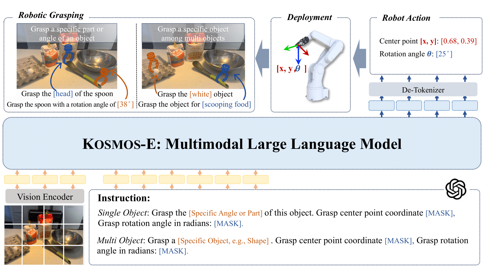

Hi, there. I'm Zhi Wang. I go by Leo. I'm a first-year CS PhD Student in Robotics🤖 at University of Maryland, College Park, advised by Prof. Yiannis Aloimonos. I received my Bachlor's degree in Electronic Engineering at Tsinghua University.
I'm also a research intern at Amazon FAR (Frontier AI & Robotics), working with Prof. Guanya Shi, Prof. Carlo Sferrazza, Dr. Rocky Duan, and Prof. Pieter Abbeel.
Previously, I was fortunate to work with Prof. Wenzhen Yuan at UIUC CS, Dr. Shaohan Huang at Microsoft Research and Prof. Jianyu Chen at Tsinghua IIIS.
I'm doing efficient robot learning from human data.
Goal: Let robots learn from multimodal information, like human videos and haptics, to achieve fine-grained and general-purpose robotic manipulation.
CV /
GitHub /
LinkedIn /
X /
Scholar /
Ins /
WeChat /
RedNote
{kind=link}
{kind=link}
Robotics PhD @ UMD
Research Intern@Amazon FAR
Email: tx.leo.wz@gmail.com
- June, 2026, I gave talks about HumanEgo and ForceBand at AI椰青, OpenDriveLab@HKU, BAAI 智源研究院, TechBeat 将门, Saturday Robotics, and Shanghai AI Lab 上海人工智能实验室.
- May, 2026, I started my internship at Amazon FAR as an applied scientist intern.
- Aug, 2025, I joined University of Maryland as a CS PhD student.
- Mar, 2025, I started my internship at ZhenFund as a investment intern.
- Jan, 2025, DoorBot was accepted to ICRA2025
- Oct, 2024, I went to Abu Dhabi to attend IROS2024.
- June, 2024, KOSMOS-E was accpeted to IROS2024
- March, 2024, I started my internship at RoboTouch Lab, UIUC CS
- July, 2023, I started my internship at Microsoft Research Asia (MSRA)
- Apr, 2023, I started my internship at EncoSmart Technology, Beijing

Website / Paper / arXiv / Video / Code
 /
Dataset /
Data Gallery /
Summary
/
Dataset /
Data Gallery /
Summary
We introduce HumanEgo, a robot-data-free, hardware-agnostic, and data-efficient pipeline that learns robot manipulation policies from minutes of raw human egocentric videos—powered by a flow matching policy with dense auxiliary objectives.
Website / Paper / arXiv / Video / Code
 /
Summary
/
Summary
ForceBand is a low-cost, wrist-worn sEMG band that predicts fingertip forces from forearm muscle activity, enabling force-enriched human demonstrations for learning forceful robot manipulation—without any force sensors on the hand.

IEEE International Conference on Robotics and Automation (ICRA), 2025
Website / Paper / Video / Code
 /
UIUC Summary /
Dataset
/
UIUC Summary /
Dataset
Proposed DoorBot, a haptic-aware closed-loop hierarchical control framework that enables robots to explore and open different unseen doors in the wild. We test our system on 20 unseen doors across different buildings, featuring diverse appearances and mechanical types. Our framework achieves a 90% success rate, demonstrating its ability to generalize and robustly handle varied door-opening tasks.

IEEE International Conference on Intelligent Robots and System (IROS), 2024, Oral Pitch
Website / Paper / Video / Code
Proposed KOSMOS-E, a Multimodal Large Language Model (MLLM) that leverages instruction-following robotic grasping data to enhance capabilities for precise and intricate robotic grasping maneuvers.
-
University of Maryland, College Park, USA
CS PhD in Robotics • Aug. 2025 to Present
Advisor: Prof. Yiannis Aloimonos
-
Tsinghua University, Beijing, China
B.Eng in EE • Aug. 2020 to Jun. 2025
Advisor: Prof. Milin Zhang, and Prof. Hui Lv
-
Amazon FAR (Frontier AI & Robotics)
Applied Scientist Intern • May. 2026 to Sep. 2026 (4 mos)
Advisor: Prof. Guanya Shi, Prof. Carlo Sferrazza, Dr. Rocky Duan, and Prof. Pieter Abbeel -
ZhenFund | 真格基金
Investment Intern • Mar. 2025 to Aug. 2025 (3 mos)
Advisor: Yusen Dai and Debbie Wang -
 RoboTouch Lab, UIUC CS
RoboTouch Lab, UIUC CS
Research Assistant • Mar. 2024 to Nov. 2024 (9 mos)
Advisor: Prof. Wenzhen Yuan -
NLC Group, Microsoft Research Asia (MSRA)
Research Intern • June. 2023 to Mar. 2024 (9 mos)
Advisor: Shaohan Huang -
EncoSmart Technology (Beijing) Co., LTD | 享刻智能
Research Intern • Apr. 2023 to Jun. 2023 (3 mos) -
ISR Lab, IIIS, Tsinghua University
Research Assistant • Sep. 2021 to Sep. 2022 (12 mos)
Advisor: Prof. Jianyu Chen
Chair of the Electronic Engineering Hardware Group, Tsinghua University2021 - 2023
- 30-Person Team, Tsinghua University [Website]
- Organized two major annual, university-wide competitions, engaging over 450 participants.
- Fall 2025 & Spring 2026, Graduate Teaching Assistant, CMSC420: Advanced Data Structure University of Maryland
- 2022, Head Teaching Assistant, 40231212: Intelligent Robots Design and Implementation Tsinghua University
- 2021, Head Teaching Assistant, 20230292: Project Design and Making of Electronic System Tsinghua University
- 2021, Head Teaching Assistant, 01550013: Synthetical Practice of Electronics System Design Tsinghua University
- Oct, 2024, Dean's Fellowship 2025, 2026 University of Maryland
- Oct, 2024, Science and Technology Innovation Scholarship (1 %), Three times: 2021, 2023, 2024 Tsinghua University
- Oct, 2024, Grand Prize of International Study Scholarship (0.2 %), Only 2 in 1018 People Tsinghua University
-
⚽️ Soccer (FC Bayern: MIA SAN MIA) / 🏈 Football / 🎾 Pickleball / 🥏 Frisbee / 💪 Body Building
-
📷 Photography (Sony A7M4 , 📷 Check Out My Photography Gallery) / 🎧 Music (Hip-Hop, R&B, Soul) / 🎥 Movies / 🚗 Road Trip
-
Apple / SpaceX / Tesla / Google / Insta360
- 🧍 Persons Who I Admire: My Mom, Kaká, Leo Messi, Thomas Müller, Elon Musk, Kanye West, David Tao, RAYE
- 🤖Entrepreneurship: I have always longed to have my own company, leading a team to develop some interesting and useful robot products. I'm currently formulating my ideas. If you are also interested in this, let's chat!